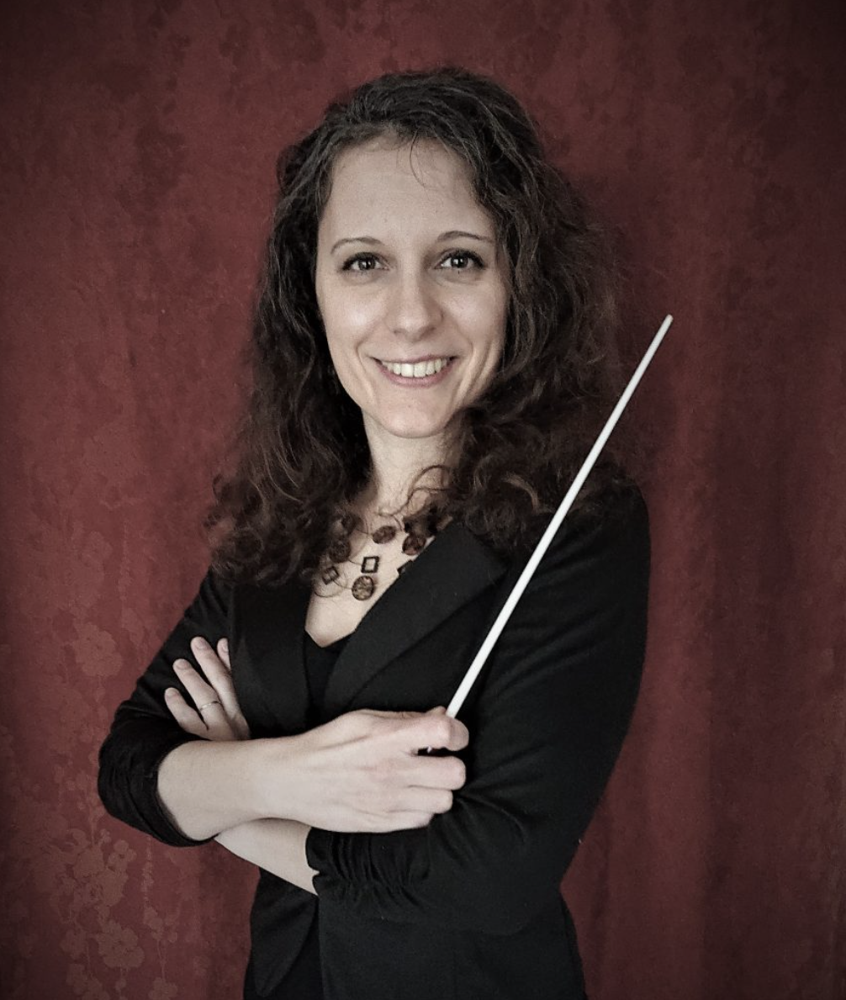
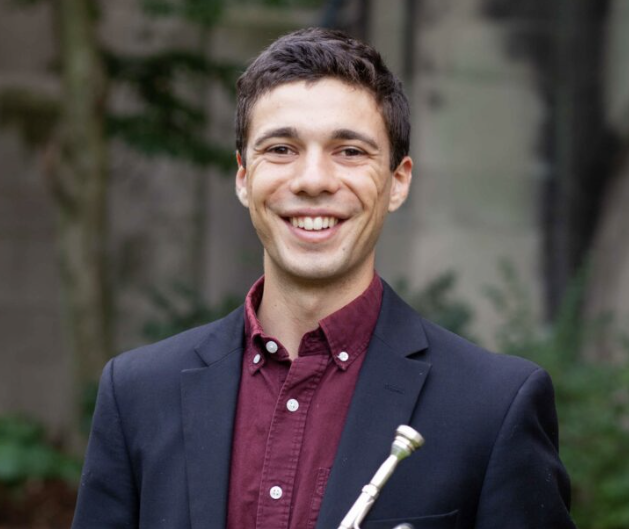

Music Director/Conductor
Eszter Horváth
Eszter Horváth grew up in the orchestra as a violinist and violist. Originally from Hungary, she settled in Canada with her parents when she was 9. Eszter started studying conducting in high school, and has been conducting amateur and semi-professional orchestras in Toronto and Halifax. She was a finalist for the assistant conductor position with the Winnipeg Symphony Orchestra in May 2019.
Eszter received her MMus in Orchestral Conducting from the University of Toronto in 2018, studying with Uri Mayer (orchestral), Dr Gillian MacKay (instrumental), and Dr Hilary Apfelstadt (choral). Besides conducting as a student and teaching assistant at the University of Toronto, she has guest conducted in the city for Orchestra Toronto, CAMMAC, and is the assistant conductor for Hart House Orchestra. In Halifax, she has guest conducted several concerts with Nova Sinfonia and the Chebucto Symphony Orchestra. Eszter has worked with staged opera as music director and conductor for Mozart’s Così fan tutte with the Halifax Summer Opera Festival in 2016, and Cavalli’s L’Egisto in 2017. In 2019, she was the music director for a production of Brundibár with child performers and a professional orchestra made up of members of Symphony Nova Scotia, for which she was nominated for a Theatre Nova Scotia Merritt Award for Outstanding Musical Direction. In Michigan, she has studied with Kenneth Kiesler privately and at the Conductors Retreat at Medomak. Eszter inherited a love of historically informed Renaissance and Baroque music from her father, and she is the past president of the Early Music Society of Nova Scotia. As an adult, Eszter started exploring outside the orchestral world and added vocal music to her repertoire. Having now worked professionally both as a violinist and a choral/chamber singer, Eszter is equally at home in the orchestral and choral worlds. She was the interim music director at the Cathedral Church of All Saints in 2014–15, and at St. George’s Round Church in 2010–11 (Halifax). She was associate conductor of the Nova Scotia Youth Choir in 2013 and 2014, and founded the Early Music Society of Nova Scotia’s Madrigal Group in 2012. She is a founding member of Halifax’s professional a cappella quintet, Helios Vocal Ensemble. [Link to www.heliosvocal.ca] Eszter is fluent in Hungarian, German and English, and has a working knowledge of French. Since graduating from the University of Toronto, Eszter splits her time mainly between Halifax and Ann Arbor, MI, where her husband recently moved for starting his career in battery research. Guest Conductor
Luca Antonucci

Conductor and trumpeter Luca Antonucci brings dynamism and incisive musicianship to performances throughout New England. A native of Watertown, MA, Antonucci holds an M.M. in Orchestral Conducting from the Hartt School, where he studied with Edward Cumming and Glen Adsit.
Luca is the recipient of a B.A. from Amherst College, where he graduated summa cum Laude. Luca spent the 2014-15 academic year as a Fulbright Fellow in Vienna, Austria, where he published work on Arnold Schönberg in the Journal of the Arnold Schönberg Center. His article, “Schönberg Conducts Mahler: Exploring A Performance from Schönberg’s East Coast Year” can be found in the Journal of the Arnold Schönberg Center.
He is currently a Doctoral student in Conducting at the University of Michigan, where he studies with Kenneth Kiesler. At Michigan, Luca served as the Conductor for the Campus Philharmonia Orchestra and Music Director of the Michigan Pops, and appeared in concert with the University Symphony Orchestra and Life Sciences Orchestra, as well as helping to produce two world-premiere recordings with the University Symphony. This year, he will be the Music Director of the Michigan Life Sciences Orchestra, Michigan Pops Orchestra, and Campus Symphony Orchestra, as well as serving as Assistant Conductor for the University Symphony and University Philharmonia Orchestras. He has served as cover conductor for the Portland Symphony Orchestra and was invited to serve as cover conductor for the Detroit Symphony Orchestra.
With a repertoire ranging from world premieres to Beethoven Symphonies, Luca is the founder and director of the Orchestra WIthout Borders Boston and was the conductor of the Manchester Symphony Orchestra in Manchester, CT and the Lincoln-Sudbury Civic Orchestra in Lincoln, MA from 2019-2022. Previously, he was Assistant Conductor and Youth Orchestra Conductor of the Pioneer Valley Symphony, where he created a chamber music program and oversaw successful recruiting and community-outreach programs. He has appeared throughout the US and Europe in conducting masterclasses with noted teachers including Benjamin Zander, Paul Vermel, Donald Portnoy, Peter Jaffe, Diane Wittry, Kenneth Kiesler, and Neil Varon.
An enthusiastic advocate of choral music, Luca has worked in a number of church music positions, most recently as Music Director and Organist at the First Parish, Unitarian Universalist in Cohasset, MA, where his tenure included revitalizing the Children’s Choir. He currently leads the Boston Summer Singers, formerly the Brookline Chamber Singers, a volunteer ensemble noted for its annual benefit concert in support of the Womens’ Lunch Place of Greater Boston. He was previously the Conducting Intern for the world-renowned Zamir Chorale of Boston under Dr. Joshua Jacobson and studied choral conducting with Mallorie Chernin and David Hodgkins.
Additionally, Luca maintains an active schedule as a performer on the trumpet. Recent performances have included appearances with the University Symphony Orchestra at Michigan, the New England Film Orchestra, Bay Colony Brass, Philharmonia Orchestra under Ken-David Masur, the DuBois Orchestra, and Amity Street and Charles River Brass Quintets. He is especially interested in improvisation, jazz, and the traditional brass band literature of Eastern Europe. From his time performing with the Musikverein Leopoldau, an award-winning wind band in Vienna, Austria, Luca was named “Musical Ambassador to the United States” and is passionate about spreading traditional Bohemian repertoire to ensembles in this country.
In addition to performing, Mr. Antonucci is a committed educator passionate about teaching music at all levels. He maintains a small private studio of conductors and trumpet players, and from 2017 to 2022, he was the Middle and Upper School Instrumental and General Music Teacher at the Brimmer and May School in Chestnut Hill, MA, where he led a variety of ensembles to new heights of achievement, as well as teaching classes on music theory, music history (including a popular History of Hip-Hop course), songwriting and composition. He also ran the After School Music Program. Luca was the conductor of the MMEA Western Junior District Orchestra in 2018 and is a frequent clinician at local schools. In addition, Luca is a beloved member of the faculty at Lasell Village in Newton, MA, where he teaches classes to residents on topics including Charles Ives, Mozart Operas, Kurt Weill, and the music of Latin America. He has worked at the Rivers Summer Music Program teaching music theory, chamber music, and wind ensemble classes.You can contact Luca at LucaAntonucciMusic@gmail.com. For more information, visit https://www.lucaantonuccimusic.com/